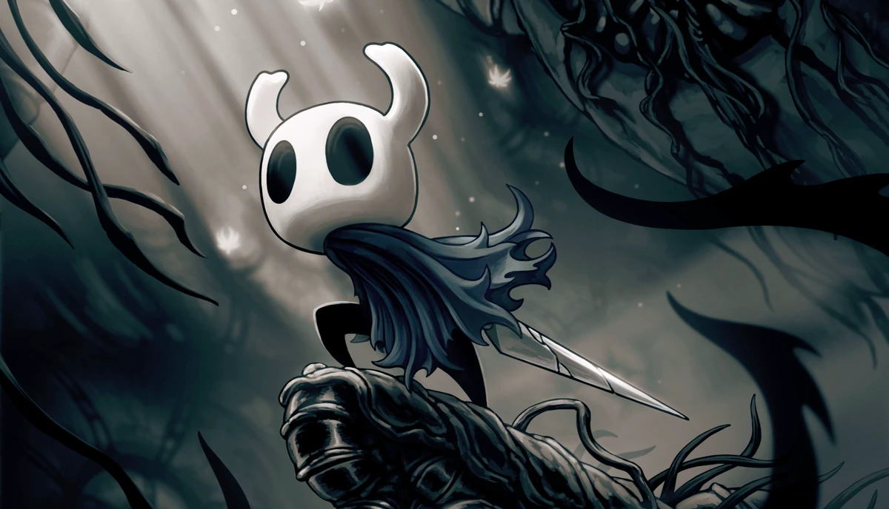

Hollow Knight
Hollow Knight es un videojuego de estilo metroidvania desarrollado por Team17. Es conocido por su arte estilo oscuro y su música envolvente.

su música y arte son reconocidos como ejemplos destacados en la industria del gaming.